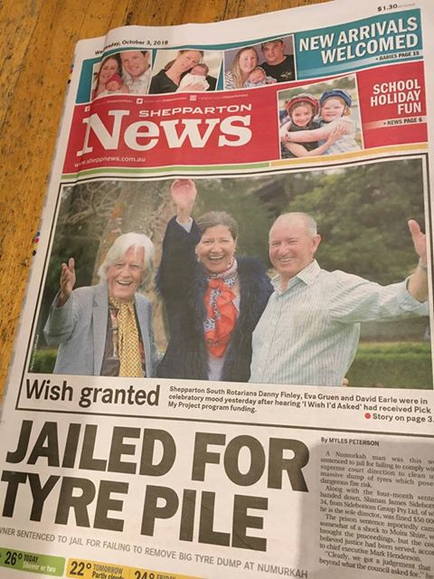
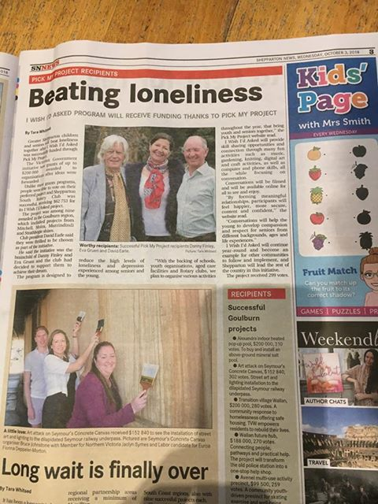

https://youtu.be/XWwLCNgs37Q
About a year ago my wife Eva and a friend of hers, Danny Finley started working on a program designed to tackle loneliness through intergenerational contact. Kids are paired with older people in their community through contact between schools and aged care institutions. This is all developed with local communities, the first cab off the rank being Shepparton. A range of activities are ensuing, including story telling leading to the building of online oral histories, the teaching of recipes and cooking, dancing and the 'reverse mentoring' of computer literacy. It's origin in the first of these initiatives is captured in Danny's fantastic name for it – I Wish I'd Asked.
There's growing enthusiasm from local institutions including Rotary, the local council and Latrobe Uni which has a campus there.
Anyway, the trigger for this post was Eva showing me some poems from Eileen Torney who is her 80s and lives in Shepparton Villages – a fantastically good aged care provider in Shepp. I liked them and reproduce them below:
Privilege
Generations of work and expertise had been repaid the farm was doing well my mother decided I should board at Genazzano a prestigious Convent school where her Aunt Mary was a nun not one who taught but a humble cook and cleaner pious unworldly subservient at the bottom of their clearly defined pecking order
Dressed in our best clothes we visited Aunt Mary and in the stylish parlour my mother announced that she wished to enrol me and Aunt Mary went to fetch the Mother Superior who refused to come We cater for the rich was the message she sent send her to Vaucluse our cheaper school in vain my mother argued that she could pay the fees she thought that was what being rich meant Your home would not be suitable if she invited friends (though she had never seen it) send her to Vaucluse
As I rise in the mornings my cat demands her treat she is a registered vet-checked and privileged cat. Outside the glass door a stray meows and pleads an illegal refugee but I couldn't let it starve I poke a tray of pellets through the door and close it again tell it I run a soup kitchen not an adoption agency.
I call one cat Genazzano and the other one Vaucluse.
https://www.youtube.com/watch?v=XWwLCNgs37Q This video was not filmed in Shepparton and has nothing directly to do with I Wish I'd Asked, but it would be fun if it could be brought off!
Wives and Mothers
When she died in 1898 her obituary made no mention of her name nor of her motherless baby daughter she was the 'wife of Mr. John McManus who was the son of Mr. Bernard McManus and daughter of Mr. Patrick Seymour' I sent an email to her grandson's wife informed her the family was cloned `Not a woman in sight', I said daughter and wife
not a real person
Still in the nineteen-fifties we were wives and mothers we formed a committee to establish a kindergarten in a town which never had one before and many didn't see the need we rejoiced when it opened and my children in turn attended I was committee secretary, duty mother when rostered still wife and mother and not much else
not a real person
By the nineteen-seventies society was changing adult education, equality for women my children independent now and grandkids would soon go to kindergarten I seized the opportunity to study, qualify and work and felt that I was Me at last
perhaps a real person
They held a reunion for the kindergarten's founders I heard about it after it was over and a friend asked why I hadn't gone "Why wasn't I invited?" I asked the president rather peevishly "I didn't think of you", she answered
not always a person
I wonder where the years have gone some things are less important now I have knowledge enough to enjoy a good book eyes that still work though other things waver sunshine that warms and pictures in clouds time away from life's pressures to take it all in people who care and are there when I need them for each day I am grateful
to still be a person.

